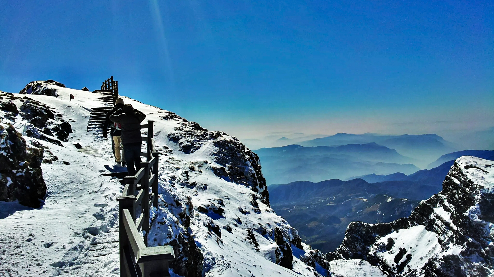

云南大学
东川轿子雪山是云南省级自然保护区，海拔4223米，有“滇中第一山”的美誉，因山顶形似轿子，故称为“轿子雪山”。
东川轿子雪山古称“绛云露山”，南诏仿效中原封岳而称之为“东岳”，属乌蒙山余脉拱王山系，位于东川区西北部，是滇中典型的山岳形冰川地貌景观。
二月时分，雪花飘飘的轿子雪山，冰瀑高悬，登山探险，踏雪观景是难得的体验，沟壑林原中，悬崖峭壁上，雪和水以冰的形式存在着，似凝固的音符或似银河落九天，把流动的水和悬挂的雪雕塑在昆明市的最高峰，一挂又一挂的冰瀑，巨大无比，坚硬无比，从崖际倾泄而下将你震撼在神山仙野。那些或洁白或淡蓝的冰柱冰爪、冰花冰帘，大气天成，流畅无比，让天下雕塑大师汗颜。轿子山是中国纬度较低的季节性雪山，也是距中国南方各省及东南亚、港、澳、台最近的冬季雪山旅游景区，是开展冬季冰雪旅游、冰雪体育运动的理想之地。
在云南省范围内，禄劝轿子山几乎荟萃了最著名的景观，拥有碧塔海般的静谧湖水，玉龙雪山般的雪原，高黎贡山的杜鹃花海，黄连河景区的瀑布群，香格里拉的草甸等，是云南高原自然景观的一个缩影，是以高寒景观、冰雪景观、杜鹃花海为核心的生态康体旅游区。
云南大学地球科学学院@2021~2022